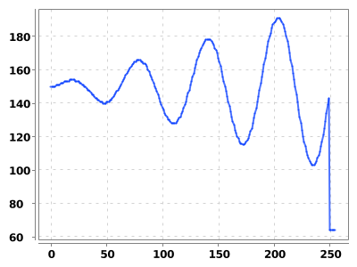
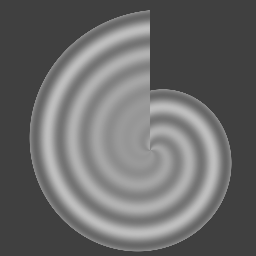
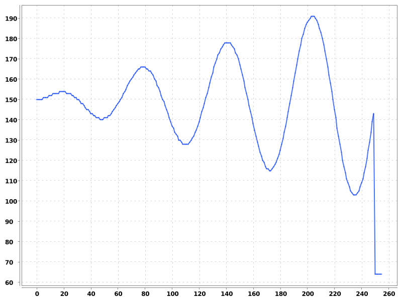

This post shows how to create and apply non-linear transformations with imglib2, specifically using DisplacementFieldTransforms and PositionFieldTransforms.
The last example of this post will show how to use a PositionFieldTransform to transform this one-dimensional signal into a two-dimensional space, forming the image below.
A 1D function
The 2D image created after transformation


First, let’s set dependencies and import the classes we’ll use:
A displacement field is the most common way to represent and store non-linear transformations. Imagine an image where a vector is stored at every position \(\mathbf{x}\). That vector describes how much and in what direction the position \(\mathbf{x}\) should be translated, or displaced.
\[
\begin{align}
\mathbf{x} &: \text{a position } \\
\mathbf{v}( \mathbf{x} ) &: \text{the vector at position } \mathbf{x}\\
\mathbf{x} + \mathbf{v}( \mathbf{x} ) &: \text{the output of the transformation}
\end{align}
\]
For example, let’s consider an example vector field with the vector \([50, -25]\) at every position. This will be equivalent to a simple global translation and is not the recommended way to represent a translation, but will be instructive thanks to its simplicity.
A FunctionRealRandomAccessible is one way to make a image containing a constant value (ConstantUtils is another way). This image can be passed directly to imglib2’s DisplacementFieldTransform.
Code
var displacementVector =newdouble[]{50,-25};var constantVector =new FunctionRealRandomAccessible<>(2,(x, v)->{ v.setPosition( displacementVector );},// set the vector ()->{return DoubleType.createVector(2);});// make a 2d vectorvar dfieldConstant =newDisplacementFieldTransform( constantVector );
Applying the transformation to any point translates that point by the same amount \([50, -25]\) , as expected:
Code
// two ways of initializing a point (0.0, 0.0)var x =newRealPoint(0.0,0.0);// give the coordinates as argumentsvar y =newRealPoint(2);// give the number of dimensions as an argument// transform x, store the result in ydfieldConstant.apply( x, y );// [-50,25] is transformed to [0,0]printTformPts(x,y);x =newRealPoint(-50,25);dfieldConstant.apply( x, y );// [-50,25] is transformed to [0,0]printTformPts(x,y);x =newRealPoint(Math.PI,100000);dfieldConstant.apply( x, y );// [pi, 100k] is transformed to [50+pi, 100k - 25]printTformPts(x,y);
Our data needs to be 3D, where the first dimension holds the two vector components, and the other two hold the spatial dimensions. We can use an ArrayImg to store these data.
Code
var dfieldData = ArrayImgs.doubles(newdouble[]{1,1,2,2,3,3,4,4},// the data2,2,2);// the dimensionsvar dfieldCorners =newDisplacementFieldTransform( dfieldData );
CompilationException:
For example, we expect the transform to take the point \([0,1]\) to \([3,4] = [0,1] + [3,3]\), and that is indeed what we see:
Code
// [0,0] is transformed to [1,1] = [0,0] + [1,1]var x =newRealPoint(0.0,0.0);var y =newRealPoint(2);dfieldCorners.apply( x, y );printTformPts( x, y );// [1,0] is transformed to [3,2] = [1,0] + [2,2]var x =newRealPoint(1.0,0.0);dfieldCorners.apply( x, y );printTformPts( x, y );// [0,1] is transformed to [3,4] = [0,1] + [3,3]var x =newRealPoint(0.0,1.0);dfieldCorners.apply( x, y );printTformPts( x, y );// [1,1] is transformed to [5,5] = [1,1] + [4,4]var x =newRealPoint(1.0,1.0);dfieldCorners.apply( x, y );printTformPts( x, y );
What happens if we try to apply the transformation “in between” the discrete values of the array, or out-of-bounds of the array?
Code
var x =newRealPoint(0.5,0.5);var y =newRealPoint(2);dfieldCorners.apply( x, y );// [0.5, 0.5] is transformed to [3.0, 3.0]printTformPts(x,y);var x =newRealPoint(-100,-100);var y =newRealPoint(2);dfieldCorners.apply( x, y );// [-100, -100] is transformed to [-99.0,-99.0]printTformPts(x,y);
By default, linear interpolation determines the displacement within the array but off of grid values. The nearest value on the border of the array determines the displacement outside the bounds. If instead we want nearest-neighbor interpolation and all out-of-bounds displacements to be zero it can be acheived by:
Code
// interpret our 3d image as a 2d image of vectorsvar vectorsFrom3D = Views.collapseReal( Views.moveAxis( dfieldData,0, dfieldData.numDimensions()-1));// make the displacement field with custom interpolation and boundary extensionvar dfieldCornersCustom =newDisplacementFieldTransform( Views.interpolate( Views.extendZero( vectorsFrom3D ),// zeros out-of-boundsnewNearestNeighborInterpolatorFactory()));// nearest-neighbor interpolationvar x =newRealPoint(0.4,0.4);var y =newRealPoint(2);dfieldCornersCustom.apply( x, y );printTformPts(x,y);var x =newRealPoint(-100,-100);var y =newRealPoint(2);dfieldCornersCustom.apply( x, y );printTformPts(x,y);
Another common requirement is to specify the spacing and offset of the displacement field’s discrete grid. For example, suppose we want the displacements above to be applied to the field of view \([-10, 10] \times [-20, 20]\) rather than the array coordinates \([0, 1] \times [0, 1]\).
where the values outside the box are the coordinates of the corners.
This is possible by passing the desired spacing and offset directly to the DisplacementFieldTransform.
Code
/* * the spacing and offset below map the array origin [0,0] to [-10,-20] * and the element at array index [1,1] to [10,20] */var spacing =newdouble[]{20,40};var offset =newdouble[]{-10,-20};var dfieldCornersSpacingOffset =newDisplacementFieldTransform( dfieldData, spacing, offset );// [-10,-20] is displaced by the vector [1,1], so goes to [-9,-19]var x =newRealPoint(-10,-20);var y =newRealPoint(2);dfieldCornersSpacingOffset.apply( x, y );printTformPts( x, y );// similarly, [10,20] is displaced by the vector [4,4], so goes to [14,24]var x =newRealPoint(10,20);var y =newRealPoint(2);dfieldCornersSpacingOffset.apply( x, y );printTformPts( x, y );
Now let’s transform it using our constant valued displacement field. Remember this field has the vector \([50, -25]\) everwhere.
First, we’ll define two functions for transforming images:
Code
public RandomAccessibleInterval transformImageItvl( RandomAccessible img, RealTransform transform, Interval itvl ){// interpolate the input imagevar interpImg = Views.interpolate( img,newNLinearInterpolatorFactory());// transform the imagevar transformedImg =newRealTransformRandomAccessible(interpImg, transform );// rasterize and set bounding boxreturn Views.interval( Views.raster(transformedImg), itvl );}public RandomAccessibleInterval transformImage( RandomAccessibleInterval img, RealTransform transform ){// default out-of-bounds extension and output intervalreturntransformImageItvl( Views.extendZero( img ), transform, img );}
Code
var imgTransformed =transformImage( ImageJFunctions.wrap( imp ), dfieldConstant );imgTransformed
Notice that the image is shifted down (+y direction) and to the left (-x direction), has the opposite sign of the displacement vector. This is because the “inverse” transformation (from output coordinates to input coordinates) is needed to transform images. Learn why here.
Now let’s use what we learned above to make a displacement field whose corners are the corners of the image.
Code
importnet.imglib2.img.array.ArrayImgs;// some vector fieldvar dfieldData = ArrayImgs.doubles(newdouble[]{-45,-50,35,-35,-25,25,70,75},// the vector data2,2,2);// the dimensions// use the image width and height as the vector fields spacingvar dfield =newDisplacementFieldTransform( dfieldData, imp.getWidth(), imp.getHeight());// transform the imagevar imgTransformed =transformImage( ImageJFunctions.wrap( imp ), dfield );imgTransformed
Finally, let’s make a field of random displacements at one-tenth the resolution of the image and apply it.
Code
// create image of random vectorsvar randDfieldData = ArrayImgs.doubles(2,(long)(imp.getWidth()/20),(long)(imp.getHeight()/20));randDfieldData.forEach( x ->{ x.set(15*(Math.random()-0.5));});// spacing of 20var dfield =newDisplacementFieldTransform( randDfieldData,20,20);// transform the imagevar imgTransformed =transformImage( ImageJFunctions.wrap( imp ), dfield );imgTransformed
Position fields
A position, or coordinate field is similar to a displacement field in that it is also represented by a field of vectors, but those vectors represent positions directly, rather than displacements of the current position.
\[
\begin{align}
\mathbf{x} &: \text{a position } \\
\mathbf{v}( \mathbf{x} ) &: \text{the vector at position } \mathbf{x}\\
\mathbf{v}( \mathbf{x} ) &: \text{the output of the transformation}
\end{align}
\]
If we use a constant vector field to make a PositionFieldTransform the output will always be the same:
Code
var coordinateVector =newdouble[]{1,2};var constantVector =new FunctionRealRandomAccessible<>(2,(x, v)->{ v.setPosition( displacementVector );},// set the vector ()->{return DoubleType.createVector(2);});// make a 2d vectorvar pfieldConstant =newPositionFieldTransform( constantVector );var x =newRealPoint(0,0);var y =newRealPoint(2);pfieldConstant.apply( x, y );printTformPts(x,y);var x =newRealPoint(9999,9999);var y =newRealPoint(2);pfieldConstant.apply( x, y );printTformPts(x,y);
The Localizables class has some convenience methods for producing images of coordinates. Creating a position field with this image gives the identity. FunctionRandomAccessibles can also be used to generate coordinate images.
// the identity transformationvar identityPfield =newPositionFieldTransform( Localizables.realRandomAccessible(2));var x =newRealPoint(0,0);var y =newRealPoint(2);identityPfield.apply( x, y );printTformPts(x,y);var x =newRealPoint(9999,9999);var y =newRealPoint(2);identityPfield.apply( x, y );printTformPts(x,y);
For the above examples, notice that the identityPfield does indeed behaves as the identity transformation.
Let’s make another position field that stretches and compresses the image in a non-linear way.
Code
var pFieldVectorField =new FunctionRealRandomAccessible<>(2,(p, v)->{var cx = imp.getWidth()/2.0;var cy = imp.getHeight()/2.0;var ex =Math.exp(-0.020*(p.getDoublePosition(0)- cx ));var ey =Math.exp(-0.020*(p.getDoublePosition(1)- cy )); v.setPosition(10+700/(1+ ex ),0); v.setPosition(500/(1+ ey ),1);},()->{return DoubleType.createVector(2);});// spacing of 10var spacing =newdouble[]{1,1};var offset =newdouble[]{ imp.getWidth()/2.0, imp.getHeight()/2.0};var pfield =newPositionFieldTransform( pFieldVectorField );// transform the imagevar imgTransformed =transformImage( ImageJFunctions.wrap( imp ), pfield );imgTransformed
Position fields can have different input and output dimensions. The length of the vector (first) dimension of the position field indicates its output dimension. The domain of the field indicates the input dimension. So generally, an N+1 dimensional image has N-dimensional inputs since one dimension is the vector dimension. Let’s consider an example.
Code
var randPfieldData = ArrayImgs.doubles(2,20,30,40,50);// make a 5d arrayvar pfieldRand =newPositionFieldTransform( randPfieldData );System.out.println("input dimensions: "+ pfieldRand.numSourceDimensions());System.out.println("output dimensions: "+ pfieldRand.numTargetDimensions());
input dimensions: 4
output dimensions: 2
Let’s make another example, transforming a 1D signal into a 2D space. First, we’ll make and graph a 1D signal with a FunctionRandomAccessible.
Code
// a 1d signalvar sin1d =new FunctionRandomAccessible<>(1,(p, v)->{double t = p.getDoublePosition(0);if( t >250) v.set(64);else v.setReal(150+((t/5)*Math.sin( t /10)));}, UnsignedByteType::new);// plot the 1d functionvar xpts =newdouble[256];var ypts =newdouble[256];var access = sin1d.randomAccess();IntStream.range(0,256).forEach( i ->{ xpts[i]= i; access.fwd(0); ypts[i]= access.get().getRealDouble();});var chart =newXYChartBuilder().width(800).height(600).build();chart.getStyler().setChartTitleVisible(false);chart.getStyler().setLegendVisible(false);chart.getStyler().setChartTitleBoxBackgroundColor( java.awt.Color.white);chart.getStyler().setChartBackgroundColor( java.awt.Color.white);var series = chart.addSeries("function", xpts, ypts);series.setMarker(SeriesMarkers.NONE);BitmapEncoder.getBufferedImage( chart )

Code
// create the position field (1D -> 2D)var pFieldTransition =newPositionFieldTransform(new FunctionRealRandomAccessible<>(2,( p, v )->{double x = p.getDoublePosition(0)-150;double y = p.getDoublePosition(1)-150;double r =Math.sqrt( x*x + y*y );double tht =Math.atan2( x, y ); v.setPosition(2.5* r +32* tht,0);},()->{return DoubleType.createVector(1);}));// transform the imagevar imgTransformed =transformImageItvl( sin1d, pFieldTransition,newFinalInterval(256,256));imgTransformed